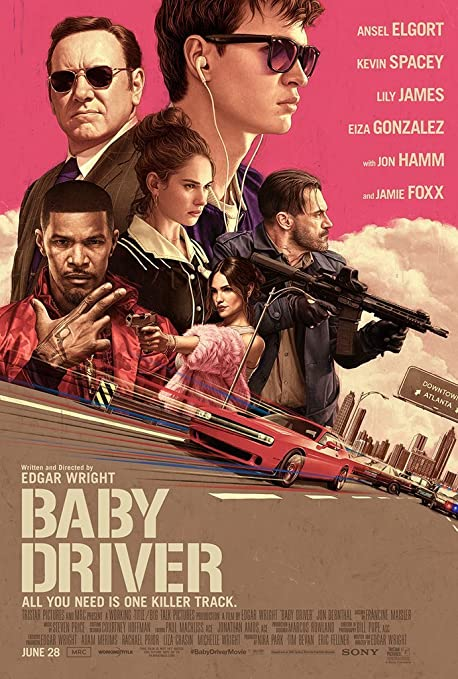

|
 |
| The Lost Valentine | Baby Driver |
| View Trailer | View Trailer |
The Lost ValentineMovie InfoA reporter (Jennifer Love Hewitt) seeks the truth about a woman's (Betty White) husband (Billy Magnussen), a pilot who never returned from duty in World War II. |
Baby DriverMovie InfoTalented getaway driver Baby (Ansel Elgort) relies on the beat of his personal soundtrack to be the best in the game. After meeting the woman (Lily James) of his dreams, he sees a chance to ditch his shady lifestyle and make a clean break. Coerced into working for a crime boss (Kevin Spacey), Baby must face the music as a doomed heist threatens his life, love and freedom. |